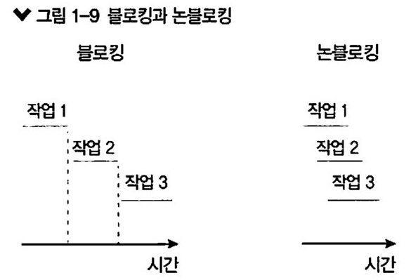
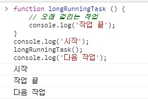
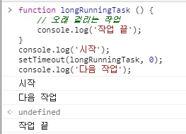

이벤트 루프를 잘 활용하면 오래 걸리는 작업을 효율적으로 처리할 수 있습니다.
오래 걸리는 함수를 백그라운드로 보내서 다음 코드가 먼저 실행되게 하고,
그 함수가 다시 태스크 큐를 거쳐 호출 스택으로 올라오기를 기다리는 방식입니다.
이 방식이 논블로킹 방식입니다.
논블로킹이란 이전 작업이 완료될 때까지 멈추지 않고 다음 작업을 수행함을 뜻합니다.

그림 1-9를 보면 블로킹보다 논블로킹 방식이 같은 작업을 더 짧은 시간 동안 처리할 수 있음을 알 수 있습니다.
하지만 싱글 스레드라는 한계 때문에 자바스크립트의 모든 코드가 이 방식으로 시간적 이득을 볼 수 있는 것은 아닙니다.
현재 노드 프로세스 외의 다른 컴퓨팅 자원을 사용할 수 있는 I/O 작업이 주로 시간적 이득을 많이 봅니다.
I/O는 입력(input)/출력(output)을 의미합니다.
파일 시스템 접근(파일 읽기, 쓰기, 폴더 만들기 등)이나 네트워크 요청 같은 작업이 I/O의 일종입니다.
이러한 작업을 할 때 노드는 논블로킹 방식으로 동작합니다.
블로킹과 논블로킹 말고도 동기와 비동기라는 개념에 대해서도 들어보았을 것입니다.
이 개념은 코드를 보지 않고서는 이해하기 어렵습니다.
동기와 비동기, 블로킹과 논블로킹의 관계는 다음에(3.6.1절) 설명합니다.
그 전까지는 동기와 블로킹이 유사하고, 비동기와 논블로킹이 유사하다고만 알아두면 됩니다.
다음 예제는 블로킹 방식의 코드입니다.
콘솔 결과를 미리 예측해보세요.
function longRunningTask () {
// 오래 걸리는 작업
console.log('작업 끝');
}
console.log('시작');
longRunningTask();
console.log('다음 작업');

결과는 위와 같습니다.
작업을 수행하는 데 오래 걸리는 longRunningTask 함수가 있다고 가정해봅시다.
이 작업이 완료되기 전까지는 이어지는 console.log('다음 작업')이 호출되지 않습니다.
이번에는 setTimeout을 사용해서 코드를 바꿔보겠습니다.
논블로킹 방식의 코드입니다.
function longRunningTask () {
// 오래 걸리는 작업
console.log('작업 끝');
}
console.log('시작');
setTimeout(longRunningTask, 0);
console.log('다음 작업');

setTimeout(콜백, 0)은 코드를 논블로킹으로 만들기 위해 사용하는 기법 중 하나입니다.
노드에서는 setTimeout(콜백, 0) 대신 다른 방식을 주로 사용합니다. (3.4.3절 참조)
이벤트 루프를 이해했다면 setTimeout의 콜백 함수가 테스크 큐로 보내지므로 순서대로 실행되지 않는다는 것을
알 수 있습니다.
다음 작업이 먼저 실행된 후, 오래 걸리는 작업이 완료됩니다.
- setTimeout(콜백, 0)
-
밀리초를 0으로 설정했으므로 바로 실행되는 것이 아닌가 착각할 수 있습니다.
하지만 브라우저와 노드에서는 기본적인 지연 시간이 있으므로 바로 실행되지 않습니다.
HTML5 브라우저에서는 4ms, 노드에서는 1ms의 지연 시간이 있습니다.